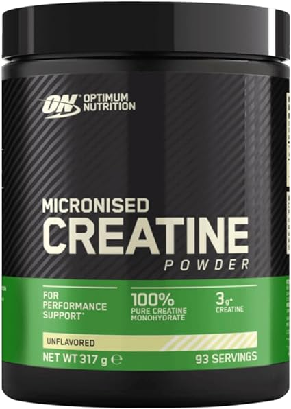

Te has puesto a pensar cual es la mejor creatina calidad, precio?
Aqui podras comparar el precio, la calidad y resultados sobre las creatinas mas buscadas en el mercado
Optimum Nutrition: la mejor valorada
Esta creatina monohidrato en polvo de ON es, por estadística, la que más posibilidades tienes de encontrar en la casa de cualquier deportista. Al menos eso indica el gran número de valoraciones positivas que acumula en Amazon, más de 12.000, lo que convierte a esta marca en la favorita de los consumidores. Al menos entre los no veganos, ya que su origen no es vegetal. No tiene sabores añadidos, es muy fácil de mezclar incluso con agua fría y se presenta en un bote de 317g equivalentes a 93 raciones.
Gen: formato XXL
Otra marca que tiene muy buena fama entre sus consumidores es German Elite Nutrition, que también acumula miles de reviews positivas en Amazon gracias, entre otros motivos, a venderse en un formato gigante de 1 kilo,tamaño más que suficiente para asegurar tu ración diaria de creatina en polvo durante un año. Además también es totalmente vegana, otro punto a favor que la convierte en la opción favorita de muchos deportistas. Y por supuesto incluye una cuchara para permitir una dosificación fácil y precisa.
WFN: la opción vegana
Este suplemento contiene Creapure de origen sintético, por lo que es apto para vegetarianos y veganos, así como para personas que siguen una dieta estricta sin productos de origen animal. De sabor totalmente neutro, este monohidrato también está totalmente libre de aditivos como potenciadores artificiales del sabor, colorantes, antiaglomerantes, espesantes, aspartamo, gluten o lactosa. Su aspecto es ultrafino y no deja grumos, por lo que se puede mezclar fácilmente con tu batido de proteínas favorito, bebida deportiva o cualquier líquido ya que no altera su gusto.
Farmafusión: con mucho sabor
Esta creatina en polvo pura y microfiltrada aporta 5 g de suplemento puro con tan solo un cacito. Desarrollada con el último avance en fabricación y siendo microencapsulada y microfiltrada en su totalidad para ofrecer una máxima asimilación, se presenta con un delicioso sabor a sandía que hace que destaque solo por eso sobre el resto de marcas del mercado.
AMIX: excelente absorción
Aunque todas parezcan iguales, si por algo destaca esta creatina monohidrato en polvo sobre el resto de competidoras es que está ultramicronizada para garantizar que incluso los organismos más delicados la absorban sin problema. Vamos, que si tienes el estómago delicado, esta es tu marca amiga. Se presenta en un bote de 300 gramos y no tiene ningún sabor añadido, por lo que puedes tomarla diluida con agua o con zumo sin que notes nada raro en el paladar.
Te has puesto a pensar cual es la mejor proteina calidad, precio?
Aqui podras comparar el precio, la calidad y resultados sobre las Protenias mas buscadas en el mercado
Superar un clásico es una tarea difícil. Se podría argumentar que la proteína de suero más reconocida en el planeta, Gold Standard de Optimum Nutrition, es también probablemente la más fácil de conseguir. Con más de 20 sabores diferentes, no te aburrirás de ninguno (hemos probado el de chocolate y coco, pero el de galletas y crema sigue siendo nuestro favorito). Además, ON se mezcla fácilmente, evitando grumos de proteína en el vaso o la batidora. Con 24 gramos de proteína para fomentar la construcción muscular y 5,5 gramos de aminoácidos de cadena ramificada para impulsar la recuperación, es el suplemento de fitness exclusivo que satisface prácticamente todos los requisitos.
Cada año, las empresas perfeccionan el sabor y la capacidad de mezcla de las proteínas vegetales en polvo, pero ninguna ha logrado acercarse a la fórmula de Weider, que favorece la proteína de guisante debido a que su excepcional composición de aminoácidos proporciona un valor nutricional comparable al de la proteína de suero de leche. Esta proteína está disponible en una amplia variedad de sabores, aunque, si tuviéramos que elegir uno, nos inclinaríamos por el de frutos rojos.
es cierto que hay proteínas en polvo que pueden tener un sabor "aceptable" cuando se mezclan con agua, pero nadie debería verse obligado a emplear trucos mentales dignos de un Jedi para convencerse de que su bebida postentrenamiento tiene un sabor superior al que realmente posee cuando la leche no es una opción para la mezcla. Por eso, la nueva ISO Whey Clear de Life Pro nos cautiva tanto: está especialmente concebida para ser mezclada con agua, ofreciendo una variedad de sabores deliciosos como la sandía o el té helado, logrando un resultado que se asemeja más a un jugo o refresco que al convencional batido de proteínas.
Es posible que algunas proteínas en polvo sean tolerables cuando se mezclan con agua, pero nadie debería verse obligado a recurrir a trucos mentales para persuadirse de que su bebida postentrenamiento tiene un mejor sabor del que realmente tiene cuando la leche no es una opción para la mezcla. Por esta razón, la nueva ISO Whey Clear de Life Pro nos entusiasma tanto: está específicamente formulada para ser mezclada con agua y está disponible en una variedad de sabores deliciosos, como sandía o té helado, ofreciendo un resultado que se asemeja más a un jugo o refresco que al convencional batido de proteínas.
Esta proteína de suero lácteo no solo ayuda a incrementar y preservar la masa muscular, sino que también contribuye al mantenimiento de un sistema óseo saludable. Además de contener proteínas, este producto incorpora aminoácidos adicionales como la leucina, la glutamina, la arginina y la taurina, junto con enzimas que respaldan la descomposición de las proteínas, como la papaína y la bromelaína. Destaca por su amplia variedad de sabores disponibles, entre los cuales se encuentran opciones tan deliciosas como la tarta de queso o el pistacho con almendras. Es importante destacar que ninguno de estos sabores contiene azúcares añadidos, aceite de palma o gluten.
Te has puesto a pensar cual es el mejor ganandor de peso calidad, precio?
Aqui podras comparar el precio, la calidad y resultados sobre los ganadores de peso
Indudablemente, uno de los productos mejor elaborados, especialmente por sus fuentes de carbohidratos. Cada porción contiene 760 calorías, 55 g de proteínas de alta calidad (aislado, concentrado e hidrolizado de suero de leche, junto con concentrado de proteína de leche) y 105 g de carbohidratos (10 de ellos azúcares) provenientes de harina de avena, guisante y patata. También incorpora 7,2 g de fibra, así como MCT como fuente de grasas saludables.
Información Nutricional por Servicio
| Cantidad por Servicio | |
|---|---|
| Valor Energético (calorías) | 760 |
| Grasas | 12g |
| de las cuales saturadas | 8.2g |
| Hidratos de Carbono | 105g |
| de los cuales azúcares | 10g |
| Fibra | 7.2g |
| Proteínas | 55g |
True Mass es otro suplemento subidor de peso muy popular. Este mantiene una gran calidad de ingredientes y resulta uno de los mas efectivos del mercado. Con una mezcla única de carbohidratos que proporciona un gran aporte calórico, necesarios para el esfuerzo físico y la recuperación.
Información Nutricional por Servicio
| Cantidad por Servicio | |
|---|---|
| Valor Energético (calorías) | 1220 |
| Grasas | 17g |
| de las cuales saturadas | 4.2g |
| Hidratos de Carbono | 220g |
| de los cuales azúcares | 16g |
| Fibra | 0g |
| Proteínas | 50g |
El ganador de masa de Universal Nutrition, presenta una fórmula avanzada que suministra 60 gramos de proteína por porción. Además, Animal Mass incluye 84 gramos de hidratos de carbono provenientes de fuentes de carbohidratos complejos, favoreciendo así el suministro sostenido de energía. Este suplemento mantiene bajas proporciones de grasa y azúcares, proporcionando 648 calorías por toma, siendo el tamaño del servicio de Animal Mass de 165 gramos. La matriz de proteínas de Animal Mass se compone de ingredientes de alta calidad,entre los que se destacan el concentrado de suero de leche, proteína hidrolizada de suero de leche, caseína micelar y albumina de huevo. Cabe resaltar la abundancia de aminoácidos de cadena ramificada (BCAA) de manera natural en el suplemento. La fórmula de carbohidratos de Animal Mass incluye maltodextrina, inulina, maíz ceroso y fibra de avena, lo que resulta beneficioso en suplementos con una elevada proporción de calorías e ingredientes. Además, incorpora una mezcla de grasas saludables (8g por porción) que aportan ácidos grasos esenciales (EFAs) a través del MCT, aceite de girasol y linaza. Cada porción de Animal Mass consiste en 3 cacitos (165g)
Información Nutricional por Servicio
| Cantidad por Servicio | |
|---|---|
| Valor Energético (calorías) | 648 |
| Grasas | 8g |
| de las cuales saturadas | 4g |
| Hidratos de Carbono | 84g |
| de los cuales azúcares | 8g |
| Fibra | 5g |
| Proteínas | 60g |
Si quieres hacerte un gainer a base de proteína y avena esta es la solución para no tener que estar mezclandolo todo. Está hecho a base de harina de avena y mezcla de proteínas (40% concentrado de suero, 40% proteína de leche y 20% de proteína de huevo). El sabor es bastante bueno y se puede mezclar sin problemas, muy parecido a hacer un gainer casero. En cuanto a los ratios, contiene 540 calorías por toma, 66g de hidratos de carbono (3,1g de azúcar) y 40g de proteína.
Información Nutricional por Servicio
| Cantidad por Servicio | |
|---|---|
| Valor Energético (calorías) | 540 |
| Grasas | 4.4g |
| de las cuales saturadas | 1.3g |
| Hidratos de Carbono | 66g |
| de los cuales azúcares | 3.1g |
| Fibra | 0g |
| Proteínas | 40g |
Mutant Mass Extreme es el ganador de peso por excelencia de Mutant. Contiene 1070 calorías por toma, de las cuales 92g son proteína, incluyendo fuentes de de digestión lenta, media y rápida que proporcionan al cuerpo aminoácidos esenciales de forma constante.
Información Nutricional por Servicio
| Cantidad por Servicio | |
|---|---|
| Valor Energético (calorías) | 540 |
| Grasas | 4.4g |
| de las cuales saturadas | 1.3g |
| Hidratos de Carbono | 66g |
| de los cuales azúcares | 3.1g |
| Fibra | 0g |
| Proteínas | 40g |